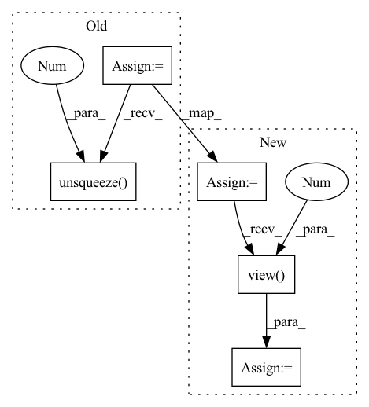

Pattern ID :555

Before Change
x = x.unsqueeze(-1)
x = self.project_to_steps(x) // BxCxTxS
x = self.dropout(x)
x = x.unsqueeze(0).expand(targets.size(0), -1, -1, -1, -1)
copies, bsz, dim, tsz, steps = x.shape
steps = min(steps, tsz - self.offset)
After Change
x = x.unsqueeze(-1)
x = self.project_to_steps(x) // BxCxTxS
x = self.dropout(x)
negatives = self.sample_negatives(y)
y = y.unsqueeze(0)
targets = torch.cat([y, negatives], dim=0) // Copies x B x C x T
copies = targets.size(0)
bsz, dim, tsz, steps = x.shape
steps = min(steps, tsz - self.offset)
predictions = x.new(
bsz * copies * (tsz - self.offset + 1) * steps
- ((steps + 1) * steps // 2) * copies * bsz
)
if self.infonce:
labels = predictions.new_full(
(predictions.shape[0] // copies,), 0, dtype=torch.long
)
else:
labels = torch.zeros_like(predictions)
weights = (
torch.full_like(labels, 1 / self.n_negatives)
if self.balanced_classes and not self.infonce
else None
)
start = end = 0
for i in range(steps):
offset = i + self.offset
end = start + (tsz - offset) * bsz * copies
if self.infonce:
predictions[start:end] = torch.einsum(
"bct,nbct->tbn", x[..., :-offset, i], targets[..., offset:]
).flatten()
else:
pos_num = (end - start) // copies
predictions[start:end] = torch.einsum(
"bct,nbct->nbt", x[..., :-offset, i], targets[..., offset:]
).flatten()
labels[start : start + pos_num] = 1.0
if weights is not None:
weights[start : start + pos_num] = 1.0
start = end
assert end == predictions.numel(), "{} != {}".format(end, predictions.numel())
if self.infonce:
predictions = predictions.view(-1, copies)
else:
if weights is not None:
labels = (labels, weights)
In pattern: SUPERPATTERN
Frequency: 4
Non-data size: 5
Instances
Fragment ID: 2030285
Project Name: mohammadkhalifa/fairseq-tagging
Commit Name: 3335de5f441ee1b3824e16dcd98db620e40beaba
Time: 2020-02-29
Author: alexei.b@gmail.com
File Name: fairseq/models/wav2vec.py
M Class Name: Wav2VecPredictionsModel
N Class Name: Wav2VecPredictionsModel
M Method Name: forward(3)
N Method Name: forward(3)
M Parent Class: nn.Module
N Parent Class: nn.Module
M File Name: fairseq/models/wav2vec.py
N File Name: fairseq/models/wav2vec.py
M Start Line: 411
M End Line: 439
N Start Line: 638
N End Line: 691
'>
Before Change
for i_track in range(self.num_prediction):
present = present_temp
prediction_single = torch.Tensor().cuda()
ind = self.index_max[:, i_track]
info_future = self.memory_fut[ind]
info_total = torch.cat((state_past, info_future.unsqueeze(0)), 2)
input_dec = info_total
state_dec = zero_padding
for i in range(self.future_len):
output_decoder, state_dec = self.decoder(input_dec, state_dec)
displacement_next = self.FC_output(output_decoder)
coords_next = present + displacement_next.squeeze(0).unsqueeze(1)
prediction_single = torch.cat((prediction_single, coords_next), 1)
present = coords_next
input_dec = zero_padding
// Iteratively refine predictions using context
for i_refine in range(1):
pred_map = prediction_single + 90
pred_map = pred_map.unsqueeze(2)
indices = pred_map.permute(0, 2, 1, 3)
// rescale between -1 and 1
indices = 2 * (indices / 180) - 1
output = F.grid_sample(scene_2, indices, mode="nearest")
output = output.squeeze(2).permute(0, 2, 1)
state_rnn = state_past
output_rnn, state_rnn = self.RNN_scene(output, state_rnn)
prediction_refine = self.fc_refine(state_rnn).view(dim_batch, 40, 2)
prediction_single = prediction_single + prediction_refine
prediction = torch.cat((prediction, prediction_single.unsqueeze(1)), 1)
return prediction
After Change
self.weight_read = torch.matmul(past_normalized, state_normalized.transpose(0,1)).transpose(0,1)
self.index_max = torch.sort(self.weight_read, descending=True)[1].cpu()[:, :self.num_prediction]
present = present_temp.repeat_interleave(self.num_prediction, dim=0)
state_past = state_past.repeat_interleave(self.num_prediction, dim=1)
scene_2 = scene_2.repeat_interleave(self.num_prediction, dim=0)
ind = self.index_max.flatten()
//ablation study
// //pdb.set_trace()
// prediction = self.memory_count[ind]
// //prediction = temp.view(dim_batch, self.num_prediction, self.future_len, 2)
info_future = self.memory_fut[ind]
info_total = torch.cat((state_past, info_future.unsqueeze(0)), 2)
input_dec = info_total
state_dec = zero_padding
for i in range(self.future_len):
output_decoder, state_dec = self.decoder(input_dec, state_dec)
displacement_next = self.FC_output(output_decoder)
coords_next = present + displacement_next.squeeze(0).unsqueeze(1)
prediction = torch.cat((prediction, coords_next), 1)
present = coords_next
input_dec = zero_padding
//pdb.set_trace()
// Iteratively refine predictions using context
for i_refine in range(4):
pred_map = prediction + 90
pred_map = pred_map.unsqueeze(2)
indices = pred_map.permute(0, 2, 1, 3)
// rescale between -1 and 1
indices = 2 * (indices / 180) - 1
output = F.grid_sample(scene_2, indices, mode="nearest")
output = output.squeeze(2).permute(0, 2, 1)
state_rnn = state_past
output_rnn, state_rnn = self.RNN_scene(output, state_rnn)
prediction_refine = self.fc_refine(state_rnn).view(-1, 40, 2)
prediction = prediction + prediction_refine
//pdb.set_trace()
prediction = prediction.view(dim_batch, self.num_prediction, 40, 2)
return prediction
def write_in_memory(self, past, future):
'>
Fragment ID: 2030281
Project Name: marchetz/mantra-cvpr20
Commit Name: 04d7a063354c991d5aaa36f28a63df2ebbee9f78
Time: 2020-01-18
Author: francescom394@gmail.com
File Name: models/model_memory_IRM.py
M Class Name: model_memory_IRM
N Class Name: model_memory_IRM
M Method Name: forward(3)
N Method Name: forward(3)
M Parent Class: nn.Module
N Parent Class: nn.Module
M File Name: models/model_memory_IRM.py
N File Name: models/model_memory_IRM.py
M Start Line: 123
M End Line: 179
N Start Line: 129
N End Line: 190
'>
Before Change
for i_track in range(self.num_prediction):
present = present_temp
prediction_single = torch.Tensor().cuda()
ind = self.index_max [:, i_track]
//ablation study
// prediction_single = self.memory_count[ind]
// prediction = torch.cat((prediction, prediction_single.unsqueeze(1)), 1)
info_future = self.memory_fut[ind]
info_total = torch.cat((state_past, info_future.unsqueeze(0)), 2)
input_dec = info_total
state_dec = zero_padding
for i in range(self.future_len):
output_decoder, state_dec = self.decoder(input_dec, state_dec)
displacement_next = self.FC_output(output_decoder)
coords_next = present + displacement_next.squeeze(0).unsqueeze(1)
prediction_single = torch.cat((prediction_single, coords_next), 1)
present = coords_next
input_dec = zero_padding
prediction = torch.cat((prediction, prediction_single.unsqueeze(1)), 1)
return prediction
def write_in_memory(self, past, future):
After Change
state_normalized = F.normalize(state_past.squeeze(), p=2, dim=1)
self.weight_read = torch.matmul(past_normalized, state_normalized.transpose(0, 1)).transpose(0, 1)
self.index_max = torch.sort(self.weight_read, descending=True)[1].cpu()[:,:self.num_prediction]
present = present_temp.repeat_interleave(self.num_prediction, dim=0)
state_past = state_past.repeat_interleave(self.num_prediction, dim=1)
ind = self.index_max.flatten()
//ablation study
//pdb.set_trace()
// temp = self.memory_count[ind]
// prediction = temp.view(dim_batch, self.num_prediction, self.future_len, 2)
info_future = self.memory_fut[ind]
info_total = torch.cat((state_past, info_future.unsqueeze(0)), 2)
input_dec = info_total
state_dec = zero_padding
for i in range(self.future_len):
output_decoder, state_dec = self.decoder(input_dec, state_dec)
displacement_next = self.FC_output(output_decoder)
coords_next = present + displacement_next.squeeze(0).unsqueeze(1)
prediction = torch.cat((prediction, coords_next), 1)
present = coords_next
input_dec = zero_padding
prediction = prediction.view(dim_batch, self.num_prediction, self.future_len, 2)
return prediction
def write_in_memory(self, past, future):
'>
Fragment ID: 2030292
Project Name: marchetz/mantra-cvpr20
Commit Name: 04d7a063354c991d5aaa36f28a63df2ebbee9f78
Time: 2020-01-18
Author: francescom394@gmail.com
File Name: models/model_decoder.py
M Class Name: model_decoder
N Class Name: model_decoder
M Method Name: forward(2)
N Method Name: forward(2)
M Parent Class: nn.Module
N Parent Class: nn.Module
M File Name: models/model_decoder.py
N File Name: models/model_decoder.py
M Start Line: 128
M End Line: 166
N Start Line: 125
N End Line: 162